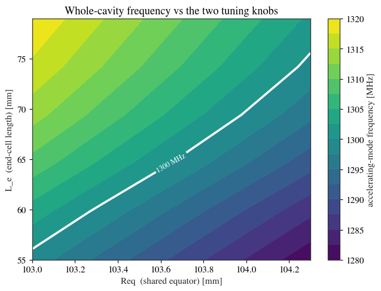
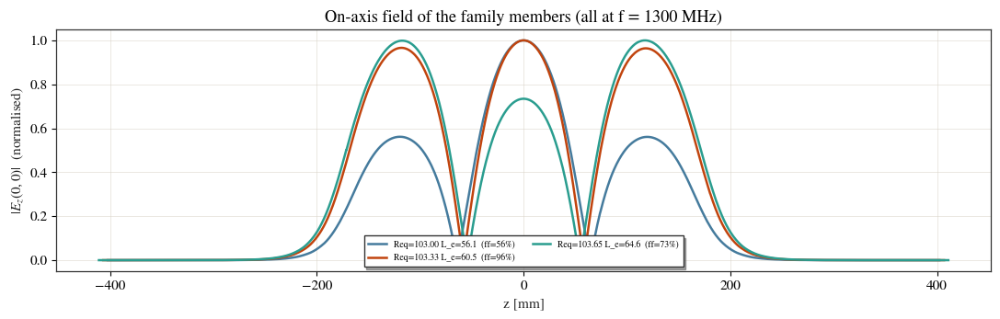
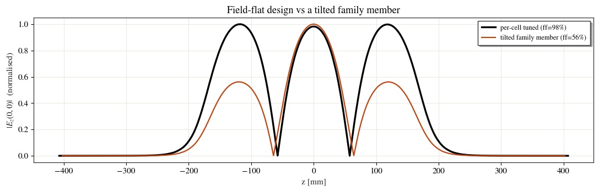
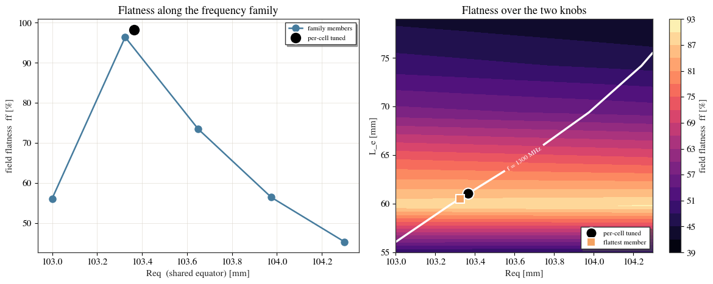

Why whole-cavity tuning needs field flatness¶
When you optimise a whole multi-cell cavity you must keep it on frequency. Doing that
with two knobs — the shared equator Req and the end-cell length L_e — is one
constraint in two unknowns, so the solutions form a continuous family: infinitely
many (Req, L_e) pairs hit the target f, and they are not the same cavity. The
extra freedom is spent on the on-axis field: most family members are tilted, and
only one is field-flat.
This example maps the frequency and the field flatness over (Req, L_e), shows a
handful of family members and their on-axis fields, and locates the flat design. The
punchline is the rule cavsim2d’s optimiser follows: tune each cell to f
independently (mid Req, end L), which lands on the flat design automatically — so
a whole-cavity optimisation over mid and end shape stays flat without a flatness
objective. Only Req (all equators) and L_e (both end lengths) move here.
import os
import tempfile
import numpy as np
import pandas as pd
import matplotlib.pyplot as plt
from scipy.signal import find_peaks
from cavsim2d import Study, EllipticalCavity
from cavsim2d.utils.style import apply_style
apply_style()
F = 1300.0 # target accelerating frequency [MHz]
NCELLS = 3
A, B, a, b, Ri, L_m = 42, 42, 12, 19, 35, 57.7 # fixed cell shape; L_m = mid length
H = 15 # eigenmode mesh size [mm]
def _flatness(e):
'''Field flatness [%] of an on-axis |Ez|: smallest / largest of the NCELLS tallest
cell peaks (100% = every cell equal). Used only to check that a saved axis field
really is the accelerating mode before plotting it.'''
pk, _ = find_peaks(e, distance=max(1, len(e) // (2 * NCELLS + 1)))
if len(pk) == 0:
return np.nan
tops = np.sort(e[pk])[-NCELLS:]
return float(tops.min() / tops.max() * 100)
def _solve_once(Req, L_e):
mid = [A, B, a, b, Ri, L_m, Req]
end = [A, B, a, b, Ri, L_e, Req]
cav = EllipticalCavity(NCELLS, mid, end, end, beampipe='both')
if cav.profile() is None:
return np.nan, np.nan, None, None
cav.set_workspace(tempfile.mkdtemp())
cav.eigenmode.run(mesh_config={'h': H, 'p': 2}, n_modes=NCELLS + 2)
dfm = cav.eigenmode.qois_df.query('m == 0')
band = dfm[dfm['freq [MHz]'] < 1.5 * F]
row = band.loc[band['R/Q [Ohm]'].idxmax()] # the accelerating (pi) mode
freq, ff = float(row['freq [MHz]']), float(row['ff [%]'])
ax_tmp = cav.plot_axis_field(show=False) # loads the on-axis |Ez|
z = np.asarray(cav.Ez_0_abs['z(0, 0)'])
e = np.asarray(cav.Ez_0_abs['|Ez(0, 0)|'])
plt.close(ax_tmp.figure)
return freq, ff, z, e
def solve(Req, L_e, axis=False):
'''Accelerating (highest-R/Q monopole) mode: (freq [MHz], ff [%]); with axis=True
also the on-axis (z[m], |Ez|). ff is the per-mode QoI; a rare peak-finder miss
returns ff == 0, so re-solve (fresh mesh) a couple of times if that happens.'''
freq = ff = z = e = np.nan
for _ in range(3):
try:
freq, ff, z, e = _solve_once(Req, L_e)
except Exception:
return (np.nan, np.nan) if not axis else (np.nan, np.nan, None, None)
if ff and ff > 0 and not np.isnan(ff):
break
return (freq, ff) if not axis else (freq, ff, z, e)
1. Map frequency and field flatness over the two knobs¶
One eigenmode solve per grid point gives both the accelerating-mode frequency and the
field flatness ff from its on-axis field (100% = every cell peak equal).
req_vals = np.linspace(103.0, 104.3, 5) # shared equator [mm]
le_vals = np.linspace(55.0, 79.0, 6) # end-cell length [mm]
Fgrid = np.full((len(req_vals), len(le_vals)), np.nan)
FFgrid = np.full_like(Fgrid, np.nan)
for i, Req in enumerate(req_vals):
for j, L_e in enumerate(le_vals):
Fgrid[i, j], FFgrid[i, j] = solve(Req, L_e)
print('Req=%.2f -> f in [%.1f, %.1f] MHz, ff in [%.0f, %.0f] %%'
% (Req, np.nanmin(Fgrid[i]), np.nanmax(Fgrid[i]),
np.nanmin(FFgrid[i]), np.nanmax(FFgrid[i])))
RR, LL = np.meshgrid(req_vals, le_vals, indexing='ij')
Req=103.00 -> f in [1298.9, 1319.6] MHz, ff in [44, 89] %
Req=103.33 -> f in [1294.3, 1315.1] MHz, ff in [44, 89] %
Req=103.65 -> f in [1289.7, 1310.7] MHz, ff in [43, 90] %
Req=103.97 -> f in [1285.1, 1306.3] MHz, ff in [43, 90] %
Req=104.30 -> f in [1280.6, 1302.0] MHz, ff in [42, 90] %
2. The frequency solutions are a continuous family¶
The white curve is F_cav = f. It is a continuous curve, so infinitely many
(Req, L_e) pairs hold the operating frequency.
fig, ax = plt.subplots(figsize=(6.6, 5.0))
cf = ax.contourf(RR, LL, Fgrid, levels=18, cmap='viridis')
cs = ax.contour(RR, LL, Fgrid, levels=[F], colors='white', linewidths=2.6)
ax.clabel(cs, fmt='%.0f MHz', fontsize=9)
plt.colorbar(cf, ax=ax, label='accelerating-mode frequency [MHz]')
ax.set_xlabel('Req (shared equator) [mm]'); ax.set_ylabel('L_e (end-cell length) [mm]')
ax.set_title('Whole-cavity frequency vs the two tuning knobs')
plt.tight_layout(); plt.show()
# a handful of family members: for each Req, the L_e that gives f = F (frequency rises
# monotonically with L_e here, so a 1-D interpolation per row is exact).
family_pts = []
for i, Req in enumerate(req_vals):
fr = Fgrid[i]
if np.nanmin(fr) <= F <= np.nanmax(fr):
family_pts.append((Req, float(np.interp(F, fr, le_vals))))
family_pts = np.array(family_pts)
print('family members (Req, L_e):')
for r, l in family_pts:
print(' Req=%.3f L_e=%.3f' % (r, l))

family members (Req, L_e):
Req=103.000 L_e=56.076
Req=103.325 L_e=60.531
Req=103.650 L_e=64.650
Req=103.975 L_e=69.386
Req=104.300 L_e=75.572
3. On-axis fields along the family — the profile tilts¶
Every member runs at f, but the on-axis accelerating field is not the same. As we
walk the family, the mid/end balance shifts and the field tilts. Each curve is
normalised to its own peak so the shape is comparable; the flatness ff is printed.
fig, ax = plt.subplots(figsize=(11, 3.6))
rows = []
member_fields = {} # ff -> (z, e) for the drawn profiles
for r, l in family_pts:
freq, ff, z, e = solve(r, l, axis=True)
if z is None:
continue
rows.append({'Req': r, 'L_e': l, 'freq [MHz]': freq, 'ff [%]': ff})
# draw the profile only when the saved field is the accelerating mode itself
# (the solver stores a single 'mode of interest', which drifts to a nearby mode
# at extreme tilt); the flatness value in the table is the per-mode QoI regardless.
if abs(_flatness(e) - ff) < 15:
ax.plot(z * 1e3, e / e.max(), lw=1.8,
label='Req=%.2f L_e=%.1f (ff=%.0f%%)' % (r, l, ff))
member_fields[ff] = (z, e)
ax.set_xlabel('z [mm]'); ax.set_ylabel('$|E_z(0,0)|$ (normalised)')
ax.set_title('On-axis field of the family members (all at f = %g MHz)' % F)
ax.legend(fontsize=7, loc='lower center', ncol=2)
plt.tight_layout(); plt.show()
fam_df = pd.DataFrame(rows)
flat_member = fam_df.loc[fam_df['ff [%]'].idxmax()]
print('flattest family member: Req=%.3f L_e=%.3f ff=%.1f%%'
% (flat_member['Req'], flat_member['L_e'], flat_member['ff [%]']))
fam_df.round(2)

flattest family member: Req=103.325 L_e=60.531 ff=96.4%
| Req | L_e | freq [MHz] | ff [%] | |
|---|---|---|---|---|
| 0 | 103.00 | 56.08 | 1299.88 | 56.09 |
| 1 | 103.32 | 60.53 | 1300.04 | 96.39 |
| 2 | 103.65 | 64.65 | 1300.00 | 73.45 |
| 3 | 103.98 | 69.39 | 1300.00 | 56.41 |
| 4 | 104.30 | 75.57 | 1300.08 | 45.32 |
4. The field-flat design from per-cell tuning¶
Now tune the cavity the way cavsim2d does inside a whole-cavity optimisation: a
two-stage tune that drives the periodic mid cell to f with Req, then the
reduced end cell to f with L (both ends tied). Two conditions → one
(Req*, L_e*); we check its flatness against the family.
study = Study(os.path.join(tempfile.mkdtemp(), 'tune2'))
mid0 = [A, B, a, b, Ri, L_m, 103.3]
study.add_cavity([EllipticalCavity(NCELLS, mid0, mid0, mid0, beampipe='both', name='cav')], ['cav'])
study.run_tune({'freqs': F, 'processes': 1, 'tol': 2e-2,
'cell_type': {'mid-cell': 'Req', 'end-cell': 'L'}, # the whole-cavity recipe
'eigenmode_config': {'processes': 1, 'boundary_conditions': 'mm'}})
tp = study.cavities_list[0].tuned.parameters
Req_star, Le_star = tp['Req_m'], tp['L_el']
f_star, ff_star, z_s, e_s = solve(Req_star, Le_star, axis=True)
print('per-cell tuned point: Req* = %.4f mm, L_e* = %.4f mm' % (Req_star, Le_star))
print(' assembled there: f = %.3f MHz, ff = %.1f %%' % (f_star, ff_star))
fig, ax = plt.subplots(figsize=(11, 3.6))
ax.plot(z_s * 1e3, e_s / e_s.max(), 'k', lw=2.4, label='per-cell tuned (ff=%.0f%%)' % ff_star)
if member_fields:
tilt_ff = min(member_fields) # most-tilted member with a clean field (from §3)
z_t, e_t = member_fields[tilt_ff]
ax.plot(z_t * 1e3, e_t / e_t.max(), 'C1', lw=1.6,
label='tilted family member (ff=%.0f%%)' % tilt_ff)
ax.set_xlabel('z [mm]'); ax.set_ylabel('$|E_z(0,0)|$ (normalised)')
ax.set_title('Field-flat design vs a tilted family member'); ax.legend(fontsize=9)
plt.tight_layout(); plt.show()
per-cell tuned point: Req* = 103.3649 mm, L_e* = 61.0645 mm
assembled there: f = 1300.083 MHz, ff = 98.2 %

5. Field flatness along the family and over the plane¶
Left: the field flatness along the frequency family — it rises to a peak and the per-cell-tuned design sits right at the maximum. Right: the same flatness as a 2-D map; the frequency family (white) crosses the high-flatness ridge exactly at the tuned point. Either way, the field-flat, on-frequency design is a single point.
fam_sorted = fam_df.sort_values('Req')
fig, (ax1, ax2) = plt.subplots(1, 2, figsize=(12, 4.8))
# left: flatness along the frequency family (vs Req)
ax1.plot(fam_sorted['Req'], fam_sorted['ff [%]'], 'o-', ms=8, color='C0', label='family members')
ax1.plot(Req_star, ff_star, 'o', ms=14, mfc='k', mec='white', mew=1.5, label='per-cell tuned')
ax1.set_xlabel('Req (shared equator) [mm]'); ax1.set_ylabel('field flatness ff [%]')
ax1.set_title('Flatness along the frequency family'); ax1.legend(fontsize=8)
# right: flatness over the (Req, L_e) plane, with the family and the special points
cf = ax2.contourf(RR, LL, FFgrid, levels=18, cmap='magma')
cs = ax2.contour(RR, LL, Fgrid, levels=[F], colors='white', linewidths=2.4)
ax2.clabel(cs, fmt='f = %.0f MHz', fontsize=8)
ax2.plot(Req_star, Le_star, 'o', ms=13, mfc='k', mec='white', mew=1.5, label='per-cell tuned')
ax2.plot(flat_member['Req'], flat_member['L_e'], 's', ms=10, mfc='C3', mec='white',
mew=1.5, label='flattest member')
plt.colorbar(cf, ax=ax2, label='field flatness ff [%]')
ax2.set_xlabel('Req [mm]'); ax2.set_ylabel('L_e [mm]')
ax2.set_title('Flatness over the two knobs'); ax2.legend(loc='lower right', fontsize=8)
plt.tight_layout(); plt.show()

What this means for optimisation¶
A single frequency constraint with two knobs leaves a 1-parameter family; §2–§3 show members that all sit at
fbut with tilted fields (ffranges widely).Per-cell tuning is the second constraint that makes the design unique and flat: §4–§5 show it landing on the flatness ridge where it meets the family.
So in cavsim2d a whole-cavity optimisation over mid and end shape tunes each cell to
f—tune_config={'cell_type': {'mid-cell':'Req','end-cell':'L'}}, or just omitcell_typeand this is the default. Field flatness comes for free, and need not be added as an objective.In a mid-cell or end-cell optimisation the single cell is already tuned to
f, so flatness is likewise automatic.